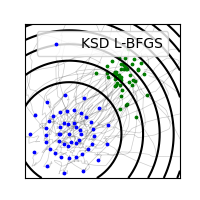
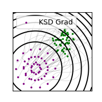
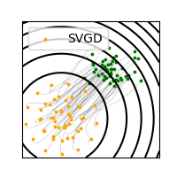
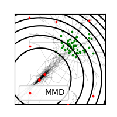

Note
Click here to download the full example code
Different algorithms on a Gaussian¶
- 
- 
- 
- 
Out:
0 tensor(350.2530)
100 tensor(2.1757e-05)
200 tensor(9.5690e-06)
300 tensor(5.7472e-06)
400 tensor(3.4608e-06)
500 tensor(2.1607e-06)
600 tensor(1.3823e-06)
700 tensor(8.9912e-07)
800 tensor(5.8443e-07)
900 tensor(3.7005e-07)
Took 0.24 sec, 135 iterations, loss = 5.38e+03
# Author: Pierre Ablin <pierre.ablin@ens.fr>
#
# License: MIT
import torch
import math
from ksddescent import ksdd_lbfgs, ksdd_gradient
from ksddescent.contenders import svgd, mmd_lbfgs
import matplotlib.pyplot as plt
import numpy as np
def score(x):
return -x / 0.3
def potential(x):
return (x ** 2).sum(dim=1)
def sampler(n_points):
return math.sqrt(0.3) * torch.randn(n_points, 1)
n_samples = 50
p = 2
x = 1.5 + torch.randn(n_samples, p) / 3
bw = 0.1
x_ksd, ksd_traj, _ = ksdd_lbfgs(x.clone(), score, bw=bw, store=True)
x_grad, grad_traj, _ = ksdd_gradient(x.clone(), score, 0.3, bw=bw, store=True)
x_svgd, svgd_traj, _ = svgd(
x.clone(), score, 0.5, bw=bw, store=True, verbose=True
)
x_mmd, mmd_traj, _ = mmd_lbfgs(
x.clone(), sampler(3 * n_samples), bw=bw, store=True
)
labels = ["KSD L-BFGS", "KSD Grad", "SVGD", "MMD"]
methods = ["bfgs", "grad", "svgd", "mmd"]
colors = ["blue", "purple", "orange", "red"]
for x_final, traj, label, color, method in zip(
[x_ksd, x_grad, x_svgd, x_mmd],
[ksd_traj, grad_traj, svgd_traj, mmd_traj],
labels,
colors,
methods,
):
plt.figure(figsize=(2, 2))
traj = np.array([x.detach().numpy() for x in traj])
if method == "mmd":
alpha = 0.2
else:
alpha = 0.2
plt.plot(traj[:, :, 0], traj[:, :, 1], c="k", alpha=alpha, linewidth=0.5)
s = 3
plt.scatter(x[:, 0], x[:, 1], s=s, color="green", zorder=1)
x_final = x_final.detach()
plt.scatter(
x_final[:, 0], x_final[:, 1], label=label, s=s, c=color, zorder=10
)
plt.legend()
x_ = np.linspace(-1.2, 3)
y_ = np.linspace(-1.2, 3)
X, Y = np.meshgrid(x_, y_)
XX = torch.tensor(np.array([X.ravel(), Y.ravel()]).T)
Z = potential(XX).reshape(X.shape).detach().numpy()
plt.contour(X, Y, Z, levels=10, colors="k")
plt.tick_params(
axis="both",
which="both",
bottom=False,
top=False,
labelbottom=False,
left=False,
right=False,
labelleft=False,
)
plt.xlim(min(x_), max(x_))
plt.ylim(min(y_), max(y_))
plt.show()
Total running time of the script: ( 0 minutes 1.802 seconds)